Volumetric Lighting Guide
Overview
This document outlines the usage of volumetric lighting effects commonly used in Epic’s own Unreal Engine 3 titles. These effects all use unlit translucent materials applied to simple geometric primitives to appear volumetric, even though they are not.
The source content required to place these volumetrics is now in the EngineVolumetrics.upk content package. This means that licensees can directly reference them in their own titles. It will be included as of the June QA Build of 2007.
NOTE: If you are seeking true Volumetric Fog that correctly handles the camera being inside of the fog, please refer to FogVolumes.
Package Structure
There are currently four kinds of volumetric lighting primitives:
- FalloffSpheres
- FogSheets
- Lightbeams
- FogEnvironments
All these materials have much in common (with the exception of FogEnvironments); they are simple emissive materials each with a different type of Opacity to hide the edges of their static mesh counterparts.
Again, all of these Volumetric Light effects are stored in the EngineVolumetrics.upk content package.
In the EngineVolumetrics package are four groups, one for each type.
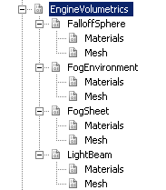
As you can see from the image, each type has two groups. The materials and meshes from each group are meant to be used together. Do not try putting a fogsheet material on a lightbeam mesh for example.
Archetypes
Falloffspheres, FogEnvironments, FogSheets and Lightbeams are all have something in common: their static mesh counterparts all require static mesh property changes that can be tiresome to keep setting over and over again. To streamline the process of adding them to the world, archetypes have been created with the correct actor properties preset. There is one archetype for each volumetric primitive type. They are all in the ‘mesh’ subgrounps and their names correspond to those of the static meshes they reference.
To gain understanding of Archetypes, please see UsingArchetypes.
The advantage of archetypes is that the actor properties can be preset and changes are propagated from the referenced archetype.
For your information, the flags that have been set on the archetypes are listed here:
CollisionType=COLLIDE_NoCollision
bAcceptsDynamicLights=False
bAcceptsLights=False
bForceDirectLightmap=False
bUsePrecomputedShadowing=False
CastShadow=False
bAcceptsDecals=False
bAcceptsDecalsDuringGameplay=False
bAcceptsFoliage=False
bUseAsOccluder=False
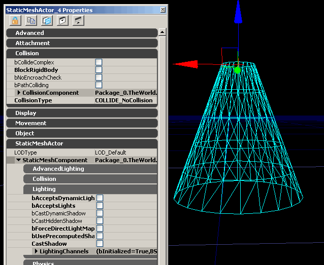
The only class that deviates is the FogEnvironment archetype, which has DepthPriorityGroup=SDPG_Foreground set, and bAllowCulldistanceVolume=False
Placing them in the world
Select the archetype for the primitive you want in the Generic Browser, right click the world and select “Add Archetype: *”
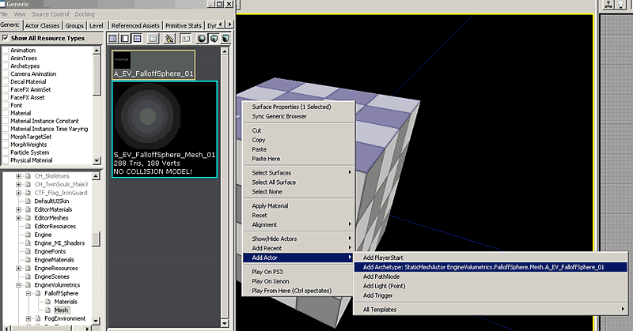
Creating an instance
Now that you have a volumetric primitive in the world that has the correct static mesh settings and already references the proper parent material, all you have to do is make a new material instance for it.
Right click the newly added static mesh, expand the ‘Materials->’ menu, then expand the ‘M_EV_*_Master_01’ menu and select “Create New InstanceConstant”.
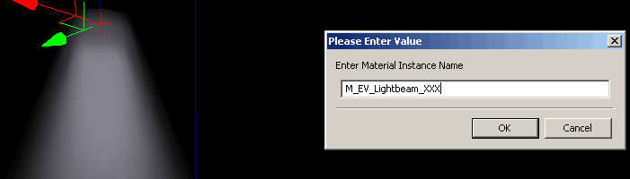
Give the instance a name that describes what you intend to use it for briefly so that you may recognize it when browsing later. Creating an instance in this way will place it in the level package for the level you have placed it in. It will also automatically open the material instance editor for the newly created instance.
For a complete explanation material instancing, see the InstancedMaterials page.
Types of Volumetrics
Now the various material instance settings will be described for each type. All other specific information regarding each of the volumetric primitive types will be listed under each specific section as well.
Falloff Spheres
A falloff sphere is the simplest volumetric primitive. It gets used to fake a faint glow coming off of a light, or even a corona effect.
Parent Material
It has a simple color vector for the emissive, and uses the Dot Product with CameraVector and TangentVector(0,0,1) to hide the edges; It also pixel depth to fade out when near the camera so you don’t notice the clipping.
It has optional depthbiasedblending toggled via StaticSwitchParameter. Usage is explained in the Instance Settings. Since there is no way to texture a sphere without seams somewhere (at least without using many overlapping samples) there is no option for texture panning overlay.
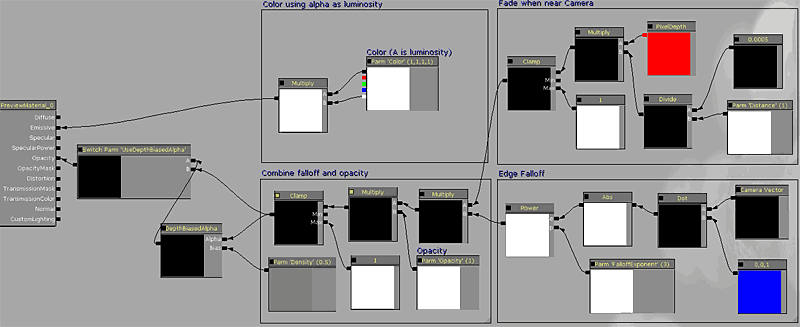
Instance Settings
Here is the full list of exposed instances for FalloffSpheres:
ScalarParameters:
Density: Tweaks the DepthBias of the depthbiasedalpha. It only has an effect if the UseDepthBiasedAlpha SwitchParameter is set to on.
Opacity: Multiplies the opacity output of the beam by the specified value.
FalloffExponent: Changes the edge falloff that is given by the dot product (cameravector,tangentvector).
Distance: Controls the distance at which fading occurs to hide camera intersection.
StaticSwitchParameters
UseDepthBiasedAlpha: Default is OFF. Turning this on adds depthbiasedalpha which hides the intersection with world and players. Cost: 12 instructions
VectorParameters
Color: The simple emissive color of the falloffsphere. Remember the Alpha controls brightness.
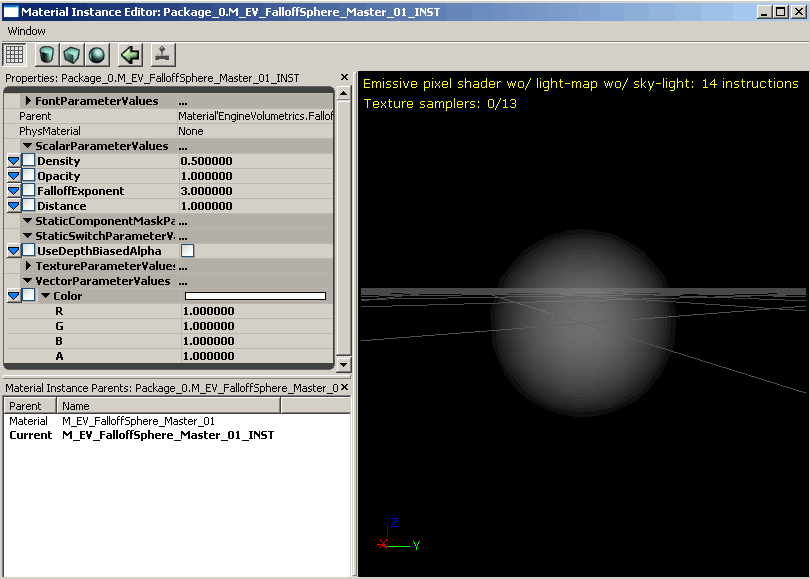
Static Mesh Information
The mesh is a simple sphere primitive with cylindrically unwrapped UVs.
FogSheets
Fogsheets are essentially just 2 polygon sheets of geometry with translucent materials applied. They can be placed in any environment to create distance separation between foreground and background elements, or to create isolated pockets of haze. Often you do not want a dense heightfog in an entire level as it may wash out areas that must be dark. You can use fogsheets to get dense fog only where you want it.
When used well fogsheets can add clarity to a busy scene by highlighting key areas. The use of the fogsheet in the arched doorway in the bottom shot draws the player in that direction. “Follow the light”.
Some examples of fogsheet use in Gears of War:
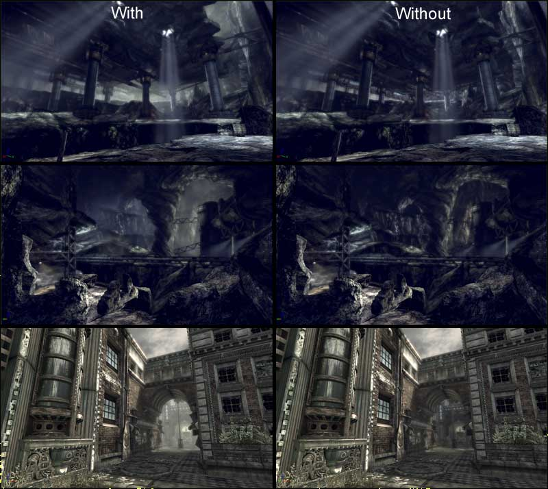
Large FogSheets should be used in moderation; stacking multiples of them nearby should be avoided as that will cause a large amount of overdraw.
Parent Material
The material for fogsheets is very similar that of the FalloffSpheres. It has a parameter for color, depthbiasedalpha, as well as panning texture overlay for hazy movement.
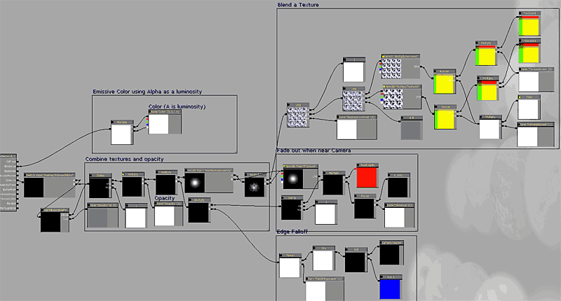
Instance Settings
Here is the full list of exposed instances for FogSheets:
ScalarParameters
Density: Tweaks the DepthBias of the depthbiasedalpha. It only has an effect if the UseDepthBiasedAlpha SwitchParameter is set to on.
Opacity: Multiplies the opacity output of the beam by the specified value.
FalloffExponent: Changes the edge falloff that is given by the dot product (cameravector,tangentvector).
Distance: Controls the distance at which fading occurs to hide camera intersection.
TextureContrast: Controls the contrast of the optional panning texture overlay. Setting it to 0 will make the texture overlay = 1 and be pointless. Setting it to 1 makes the texture output at its unaltered values. Only takes effect if the UseTextureOverlay switch parameter is on.
PanningSpeed: Controls the speed at which panning the optional texture overlay moves.
TextureScale: Controls the scaling of the optional texture overlay.
StaticSwitchParameters
UseDepthBiasedAlpha: Default is OFF. Turning this on adds depthbiasedalpha which hides the intersection with world and players. Cost: 12 instructions
UseTextureOverlay: Default is OFF. Turning it on adds two panning textures to the fogsheet for smokey motion. Cost: 9 instructions
TextureParameters
MultiplyTexture1: The first texture used in the optional texture overlay.
MultiplyTexture2: The second texture used in the optional texture overlay.
FalloffTexture: Allows you to override the texture used in the opacity. The default is a blurry white dot texture.
VectorParameters
Color: The simple emissive color of the fogsheet. Remember the Alpha controls brightness.
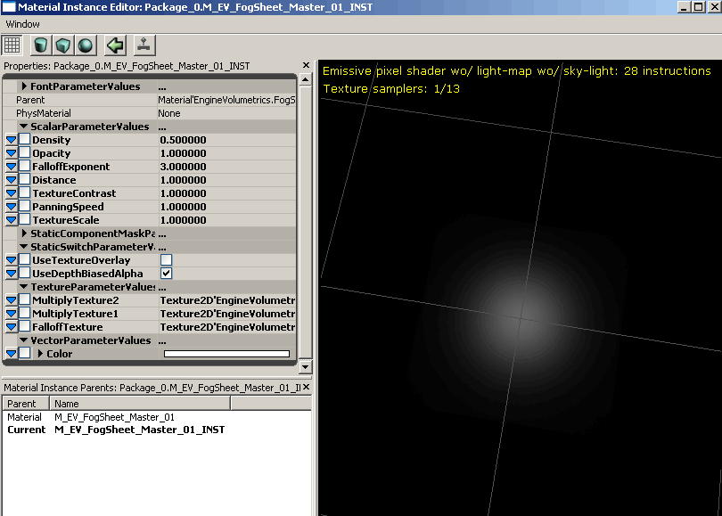
Static Mesh Information
Uses a simple 2 polygon plane mesh with a single planar map.
LightBeams
Lightbeams are probably the most commonly used type of volumetric primitive. On UT we have them coming from most powerful light sources to draw attention to them.
Parent Material
The material for lightbeams is one of the most complex volumetric types. It has to handle falloff when viewed from multiple angles and still appear to be a volumetric shape. To achieve this it uses the Y coordinate from the UV’s of the mesh while the X coordinate is generated from the reflection vector. This allows the material to map a falloff texture to the cone in such a way that it’s camera facing along the cone’s axis. It then combines another form of spherical falloff to prevent it from breaking when viewed from underneath.
To see a full tutorial explaining the creation of this lightbeam material and static mesh, please see VolumetricLightbeamTutorial. Recreating this material is the best way to learn how these volumetrics work.
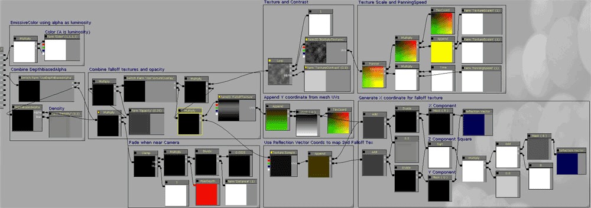
Instance Settings
Here is the full list of exposed instances for Lightbeams:
ScalarParameters:
Density: Tweaks the DepthBias of the depthbiasedalpha. It only has an effect if the UseDepthBiasedAlpha SwitchParameter is set to on.
Opacity: Multiplies the opacity output of the beam by the specified value.
FalloffExponent: Changes the edge falloff that is given by the dot product (cameravector,tangentvector).
Distance: Controls the distance at which fading occurs to hide camera intersection.
TextureContrast: Controls the contrast of the optional panning texture overlay. Setting it to 0 will make the texture overlay = 1 and be pointless. Setting it to 1 makes the texture output at its unaltered values. Only takes effect if the UseTextureOverlay switch parameter is on.
PanningSpeed: Controls the speed at which panning the optional texture overlay moves.
TextureScaleX: Controls the X scaling of the optional texture overlay.
TextureScaleY: Controls the Y scaling of the optional texture overlay.
StaticSwitchParameters
TextureParameters
MultiplyTexture1: The texture used in the optional texture overlay.
FalloffTexture: Allows you to override the falloff texture used in the opacity. The is a cone shaped texture rendered in photoshop using the lighting effects filter.
VectorParameters
Color: The simple emissive color of the lightbeam. Remember the Alpha controls brightness.
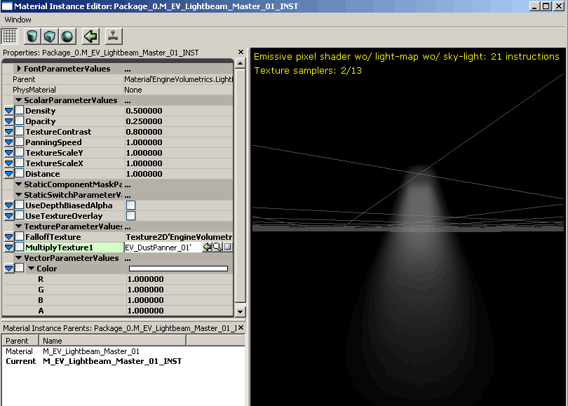
Static Mesh Information
The EngineVolumetrics package already has three cone variants with different angles. To make more variants, create a cylinder with a tapered edge and unwrap it so that there is only one seam in the UV’s. It is important to have clean UV’s since the material calculations are done in tangent space and sloppy UV’s could cause visual distortion later on. The more tessellated your mesh is, the smoother the falloff will be for the end result (a 16-sided cylinder with 4 vertical slices is fine).
To see a full tutorial explaining the creation of this lightbeam material and static mesh, please see VolumetricLightbeamTutorial.
Fog Environments
A fog environment is different from all the other volumetric types. It is an unlit translucent material meant to be rendered in the foreground DPG, essentially replacing heightfog.
Use is sparingly and only if it is absolutely needed as it is will be rendering a translucency pass on the entire screen at all times.
It has two separate hemispheres to change the color and opacity of the fog on different sides. On Unreal Tournament 3, Epic uses this to make levels have team colored fog in CTF Maps.
For it to work, the FogEnvironment mesh must be in the SDPG_Foreground DepthPriorityGroup. The FogEnvironment archetype already has this set, but you will need to set it yourself if you are not using the archetypes.
The mesh should then be scaled up using its Drawscale, and place such that it’s bounds extend beyond anywhere the player camera could go.
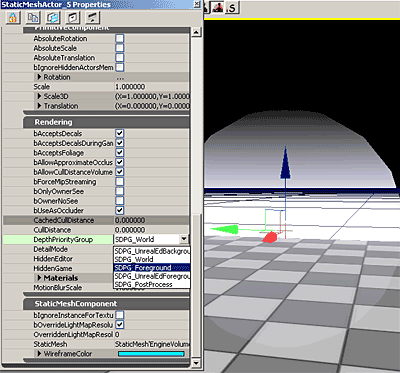
Note that because fogenvironments use the scene depth to do their fog blending, they do not handle translucent objects as well as heightfog does, so fog environments are not recommended for use in levels that contain lots of translucency in them.
Parent Material
The material for FogEnvironments uses the texture coordinates of the mesh to generate the hemispheres and the height blending. The mesh has multiple UV coordinates: one is a top-down planar map; the other is a side planar map. Using these coordinate values alone the shader constructs what it needs to for blending to occur. It also gives you control of the blend. The exact controls are described under the instance section.
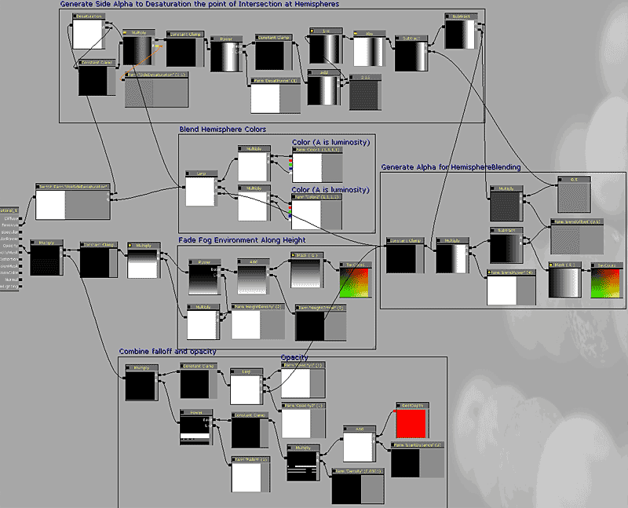
Instance Settings
Here is the full list of exposed instances for Lightbeams:
ScalarParameters:
Falloff: Falloff exponent of the scene depth. Changes how rapidly the fog accumulates.
Density: sets the density of the fog environment. Values are similar to those of heightfog density.
StartDistance: allows you to push or pull the distance at which the fog calculations start.
BlendPower: Controls the exponent of the hemisphere blend. Tweak in Tandem with BlendOffset.
BlendOffset: a simple offset to control the location of the hemisphere blend intersection.
Opacity1: Multiplies the opacity for the first hemisphere.
Opacity2: multiplies the opacity for the second hemisphere.
HeightDensity: controls the sharpness of the vertical falloff of the fog.
HeightOffset: offsets the height falloff of the fog.
SideDesaturation: Sets the amount of desaturation that occurs at the point of intersection between two hemispheres. Used to remove the nasty pink color that occurs at the center transition point between Red and Blue; a common case for its primary usage – Red and Blue team coloration.
SideDesaturationPower: Controls how far out the desaturation reaches from the center of the hemisphere intersection.
StaticSwitchParameters
UseSideDesaturation: Default is OFF. Turning this on allows you to remove the nasty pink color that occurs at the center transition point between Red and Blue; a common case for its primary usage – ctf maps. Cost: 11 instructions
VectorParameters
Color1: The simple emissive color of the first hemisphere. Remember the Alpha controls brightness.
Color2: The simple emissive color of the second hemisphere. Remember the Alpha controls brightness.
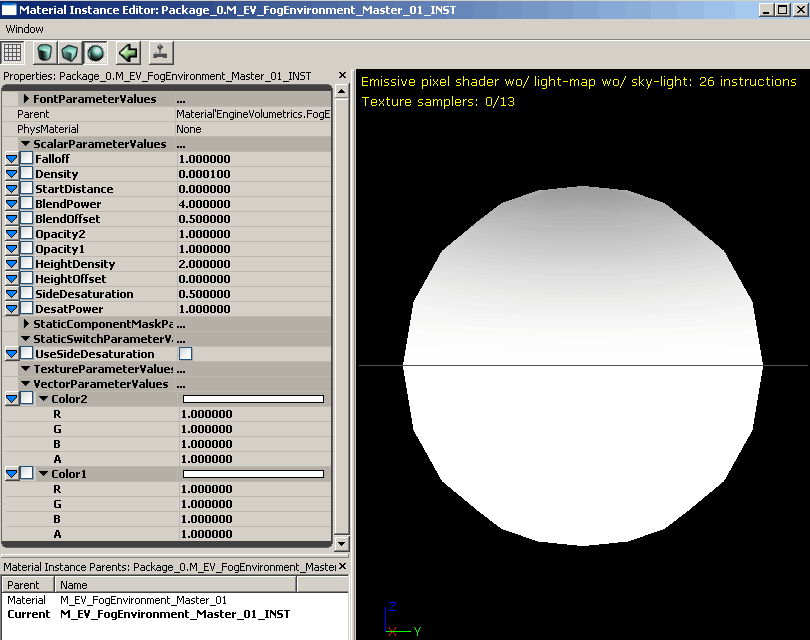
Static Mesh Information
The static mesh is a simple sphere (like the one falloffsphere uses) but has specific UV coordinate sets. One is a top-down planar map; the other is a side planar map.
Important!
You are viewing documentation for the Unreal Development Kit (UDK).
If you are looking for the Unreal Engine 4 documentation, please visit the Unreal Engine 4 Documentation site.